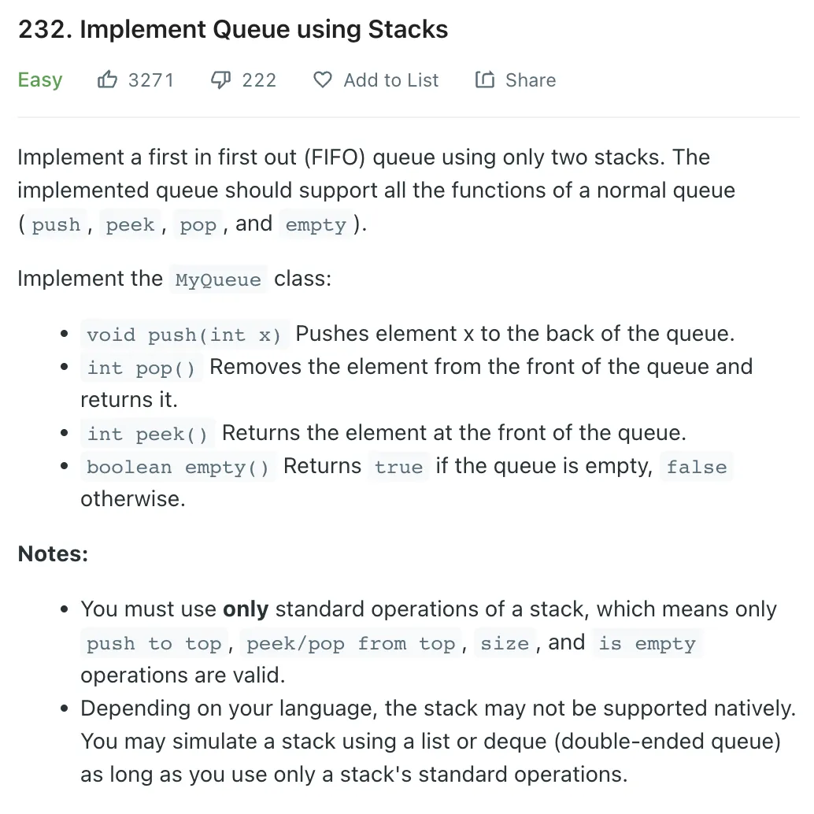
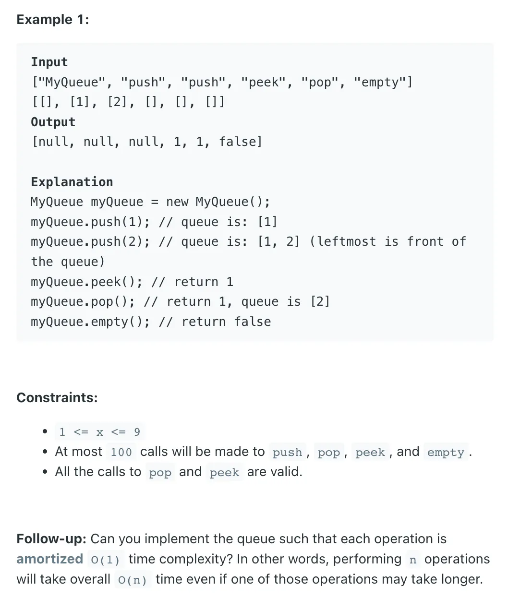

232. Implement Queue using Stacks
考過的公司：Amazon、Bytedance、Google
Question


✍🏽 My Solution
Runtime: 1 ms, faster than 68.31% of Java online submissions for Implement Queue using Stacks.
Memory Usage: 41.6 MB, less than 71.37% of Java online submissions for Implement Queue using Stacks.
class MyQueue {
Stack<Integer> inStack = new Stack<>();
Stack<Integer> outStack = new Stack<>();
public MyQueue() {
}
public void push(int x) {
inStack.push(x);
}
public int pop() {
if (inStack.isEmpty()) return -1;
while (!inStack.isEmpty()) {
outStack.push(inStack.pop());
}
int res = outStack.pop();
while (!outStack.isEmpty()) {
inStack.push(outStack.pop());
}
return res;
}
public int peek() {
if (inStack.isEmpty()) return -1;
while (!inStack.isEmpty()) {
outStack.push(inStack.pop());
}
int res = outStack.peek();
while (!outStack.isEmpty()) {
inStack.push(outStack.pop());
}
return res;
}
public boolean empty() {
return inStack.isEmpty();
}
}
Solution #1 [兩個棧]
Runtime: 0 ms, faster than 100.00% of Java online submissions for Implement Queue using Stacks. Memory Usage: 39.8 MB, less than 97.28% of Java online submissions for Implement Queue using Stacks.
class MyQueue {
Stack<Integer> input = new Stack<>();
Stack<Integer> output = new Stack<>();
public MyQueue() {
}
public void push(int x) {
input.push(x);
}
public int pop() {
peek();
return output.pop();
}
public int peek() {
if (output.isEmpty()) {
while (!input.isEmpty()) {
output.push(input.pop());
}
}
return output.peek();
}
public boolean empty() {
return input.isEmpty() && output.isEmpty();
}
}
Explanation (in my words)
- How does their solution work?
- 使用兩個棧，一個棧輸入
input，一個棧輸出output - 需要查看隊頂元素或是出隊的時候，就將
input依序放入output，此時output的輸出順序剛好和隊列相符
- 使用兩個棧，一個棧輸入
- What is the space/time complexity of their solution?
- push
- time: O(1)
- space: O(n)
- peek
- time: 最壞O(n) 棧為空，要把n個元素壓入
output，最好O(1) - space: O(1)
- time: 最壞O(n) 棧為空，要把n個元素壓入
- pop
- time: 最壞O(n) 棧為空，要把n個元素壓入
output，最好O(1) - space: O(1)
- time: 最壞O(n) 棧為空，要把n個元素壓入
- isEmpty
- time: O(1)
- space: O(1)
- push